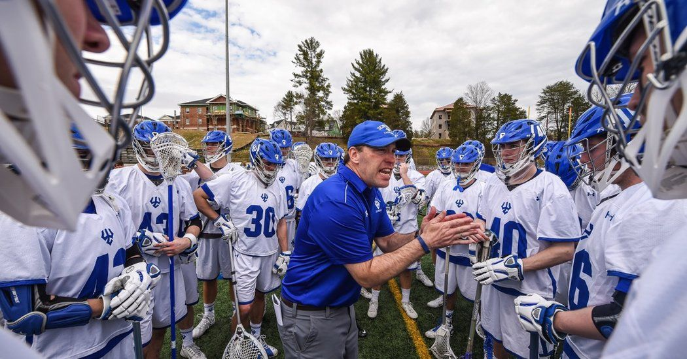

À propos de PulseArena
Née d'une expertise terrain en management et organisation d'événements sportifs en Île-de-France, PulseArena accompagne les entreprises, CSE, collectivités et associations dans la création de rendez-vous sportifs fédérateurs. Notre conviction : le sport est l'un des meilleurs leviers de cohésion lorsqu'il est accessible, bien rythmé et sans contrainte logistique pour l'organisateur.
Notre méthode en 4 étapes
- 1. Cadrage du besoin : échange rapide sur votre effectif, vos objectifs, le lieu souhaité et votre budget.
- 2. Proposition sur mesure sous 48 h : envoi d'un devis détaillé avec format sportif, déroulé horaire et options.
- 3. Préparation logistique : réservation du site ou repérage de vos locaux, constitution des poules, préparation du matériel et des arbitres.
- 4. Animation le jour J & bilan : accueil des participants, gestion fluide des rotations, remise des prix et bilan photo/classement.

Une démarche inclusive et responsable
Nos formats privilégient la mixité, le fair-play et l'adaptation des règles afin que les profils débutants comme les pratiquants réguliers prennent autant de plaisir. Nous limitons également le plastique à usage unique sur nos événements en encourageant l'usage de gourdes réutilisables et de supports numériques.
Ce que disent nos participants
Camille R. — Chargée RH (La Défense)
« Nous avons confié notre tournoi inter-services de 48 collaborateurs à PulseArena. Tout était fluide : planning respecté à la minute, arbitrage pédagogue et excellente ambiance. »
Thomas M. — Secrétaire de CSE (Rueil)
« Les olympiades ont permis à des collègues qui ne faisaient pas de sport en club de participer sans appréhension. Devis reçu en 24 h et zéro stress le jour J. »
Sarah L. — Présidente d'association (Nanterre)
« Un vrai gain de temps pour notre tournoi annuel. Le matériel, les tableaux et l'animation étaient pris en charge de A à Z avec un budget maîtrisé. »
Questions fréquentes (FAQ)
Faut-il un niveau sportif particulier pour participer ?
Non. Nos tournois et olympiades sont pensés pour le sport loisir et la cohésion. Les règles et durées de matchs sont adaptées à l'hétérogénéité du groupe pour garantir le plaisir de tous.
Pouvez-vous intervenir si nous n'avons pas de terrain ?
Oui. Nous travaillons avec un réseau de complexes sportifs et gymnases partenaires dans l'Ouest parisien et en Île-de-France, et nous intégrons la location dans votre devis global.
Combien de temps à l'avance faut-il réserver ?
Idéalement entre 2 et 4 semaines avant la date souhaitée afin de sécuriser les créneaux de salles et le personnel d'encadrement. Pour les groupes associatifs plus restreints, 10 jours peuvent suffire.
Que se passe-t-il en cas de météo défavorable pour un format extérieur ?
Chaque prestation extérieure intègre un scénario de repli (adaptation des ateliers en salle couverte ou report sans frais selon les conditions définies au devis).
Prêt à lancer votre projet d'événement ?
Décrivez votre besoin en 2 minutes via notre formulaire dédié pour recevoir votre étude personnalisée.